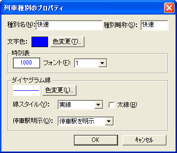

列車種別のプロパティを設定することができます。

種別名を指定してください。省略できません。
『時刻表ビュー』で、種別欄に表示される文字列を指定してください。
このテキストの長さは、半角で6文字（全角の場合は3文字）までです。
列車種別の文字色を指定してください。
この色は、時刻表ビュー・ダイヤグラムビューの両方に適用されます。
[色変更]ボタンを押すと、[色の設定] ダイアログが開きます。[色の設定] ダイアログで、色を指定してください。
この列車種別を時刻表ビューで表示する場合のフォントを、1〜8で選択してください。
この番号は、『路線ファイルのプロパティ』ダイアログの[フォント設定]の『時刻表ビュー 1』〜『時刻表ビュー 8』で設定されたフォントに対応します。
ダイヤグラム上での、この列車種別の色・線のスタイルを指定することができます。
ダイヤグラム上での、この列車種別の線の色を変更することができます。
[色変更]ボタンを押すと、[色の設定] ダイアログが開きます。[色の設定] ダイアログで、色を指定してください。
線のスタイルを指定してください。以下の4種から指定することができます。
チェックをONにすると、この列車種別の列車線を太線にすることができます。
この列車種別の列車線に対する停車駅明示機能のあり・なしを指定してください。
| 停車駅を明示 | ダイヤグラムビューの[停車駅明示]が有効な場合は、列車線上に停車駅を明示します。 |
| 明示しない | この列車種別では、停車駅明示を行いません。 |
参照：『2.1. 基本的な使い方』の『2.1.2.4. 列車種別の入力』